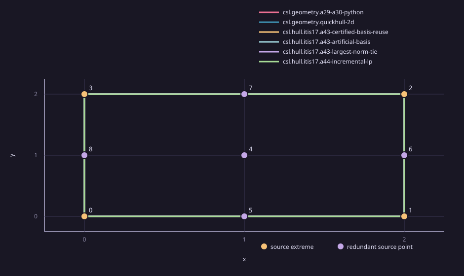

Geometry
The square corners are the hull. The center and four edge midpoints are redundant. Every method receives the same canonical input bytes. Outlines may overlap when methods return the same hull.

Input points in source order: [[0.0,0.0],[2.0,0.0],[2.0,2.0],[0.0,2.0],[1.0,1.0],[1.0,0.0],[2.0,1.0],[1.0,2.0],[0.0,1.0]]
Recorded attempts
1 excluded warmup and 5 measured repetitions per method. Execution order alternated between methods. Every attempt, including failure statuses, remains in the paired comparison record. Timings are method-local observations. Python/NumPy and C++ runtime measurements have different intervals and are inconclusive for speed comparison.
Python/NumPy and C++ use different runtimes and timing intervals, so these values support no speed comparison. No common limiter profile was collected. Host: AMD Ryzen 5 3550H with Radeon Vega Mobile Gfx, 8 logical CPUs, load averages [0.62744140625, 1.96875, 1.5078125]. Memory limits were not enforced.
| Method | Measured repetitions | Method-local summary | Per-repetition duration | Exact checker |
|---|---|---|---|---|
| csl.geometry.a29-a30-python | 5 | median 9149690 ns; range 3734997–10503782 ns | r1: 10503782 ns, r2: 4972175 ns, r3: 3734997 ns, r4: 10447351 ns, r5: 9149690 ns | 6/6 attempts verified |
| csl.geometry.quickhull-2d | 5 | median 40509 ns; range 18228–47353 ns | r1: 18228 ns, r2: 47353 ns, r3: 40509 ns, r4: 36946 ns, r5: 41905 ns | 6/6 attempts verified |
| csl.hull.itis17.a43-certified-basis-reuse | 5 | median 3139807 ns; range 1648405–3286893 ns | r1: 1648405 ns, r2: 3271039 ns, r3: 3139807 ns, r4: 2656571 ns, r5: 3286893 ns | 6/6 attempts verified |
| csl.hull.itis17.a43-artificial-basis | 5 | median 3171864 ns; range 1283622–3229553 ns | r1: 1283622 ns, r2: 3229553 ns, r3: 3039863 ns, r4: 3171864 ns, r5: 3220963 ns | 6/6 attempts verified |
| csl.hull.itis17.a43-largest-norm-tie | 5 | median 3214118 ns; range 1456690–3231858 ns | r1: 1456690 ns, r2: 3219076 ns, r3: 3105584 ns, r4: 3214118 ns, r5: 3231858 ns | 6/6 attempts verified |
| csl.hull.itis17.a44-incremental-lp | 5 | median 4164874 ns; range 3737792–5043972 ns | r1: 3737792 ns, r2: 5043972 ns, r3: 4164874 ns, r4: 4146436 ns, r5: 4404152 ns | 6/6 attempts verified |
Attempt details
| Method | Repetition | Warmup | Status | Duration ns | Source indices | Exact checker | Reducer details |
|---|---|---|---|---|---|---|---|
| csl.geometry.a29-a30-python | 0 | True | completed | 11381134 | 0:3:1:2 | verified | {} |
| csl.geometry.a29-a30-python | 1 | False | completed | 10503782 | 0:3:1:2 | verified | {} |
| csl.geometry.a29-a30-python | 2 | False | completed | 4972175 | 0:3:1:2 | verified | {} |
| csl.geometry.a29-a30-python | 3 | False | completed | 3734997 | 0:3:1:2 | verified | {} |
| csl.geometry.a29-a30-python | 4 | False | completed | 10447351 | 0:3:1:2 | verified | {} |
| csl.geometry.a29-a30-python | 5 | False | completed | 9149690 | 0:3:1:2 | verified | {} |
| csl.geometry.quickhull-2d | 0 | True | completed | 42324 | 0:1:2:3 | verified | {} |
| csl.geometry.quickhull-2d | 1 | False | completed | 18228 | 0:1:2:3 | verified | {} |
| csl.geometry.quickhull-2d | 2 | False | completed | 47353 | 0:1:2:3 | verified | {} |
| csl.geometry.quickhull-2d | 3 | False | completed | 40509 | 0:1:2:3 | verified | {} |
| csl.geometry.quickhull-2d | 4 | False | completed | 36946 | 0:1:2:3 | verified | {} |
| csl.geometry.quickhull-2d | 5 | False | completed | 41905 | 0:1:2:3 | verified | {} |
| csl.hull.itis17.a43-certified-basis-reuse | 0 | True | completed | 2906186 | 0:1:2:3 | verified | {"a43_adaptation_metrics":{"final_recheck_calls":6,"largest_norm_tie_policy_applied":false},"algorithm_status":"completed","certificates":[{"removed_index":4,"term_count":2,"verifier":"phase-one-basis-coordinate-reuse/exact-binary64-convex-combination"},{"removed_index":7,"term_count":2,"verifier":"phase-one-basis-coordinate-reuse/exact-binary64-convex-combination"},{"removed_index":8,"term_count":2,"verifier":"phase-one-basis-coordinate-reuse/exact-binary64-convex-combination"},{"removed_index":5,"term_count":2,"verifier":"hull-reducer.exact-binary64-convex-combination"},{"removed_index":6,"term_count":2,"verifier":"hull-reducer.exact-binary64-convex-combination"}],"lp_calls":6,"removed_count":5,"retained_indices":[0,1,2,3]} |
| csl.hull.itis17.a43-certified-basis-reuse | 1 | False | completed | 1648405 | 0:1:2:3 | verified | {"a43_adaptation_metrics":{"final_recheck_calls":6,"largest_norm_tie_policy_applied":false},"algorithm_status":"completed","certificates":[{"removed_index":4,"term_count":2,"verifier":"phase-one-basis-coordinate-reuse/exact-binary64-convex-combination"},{"removed_index":7,"term_count":2,"verifier":"phase-one-basis-coordinate-reuse/exact-binary64-convex-combination"},{"removed_index":8,"term_count":2,"verifier":"phase-one-basis-coordinate-reuse/exact-binary64-convex-combination"},{"removed_index":5,"term_count":2,"verifier":"hull-reducer.exact-binary64-convex-combination"},{"removed_index":6,"term_count":2,"verifier":"hull-reducer.exact-binary64-convex-combination"}],"lp_calls":6,"removed_count":5,"retained_indices":[0,1,2,3]} |
| csl.hull.itis17.a43-certified-basis-reuse | 2 | False | completed | 3271039 | 0:1:2:3 | verified | {"a43_adaptation_metrics":{"final_recheck_calls":6,"largest_norm_tie_policy_applied":false},"algorithm_status":"completed","certificates":[{"removed_index":4,"term_count":2,"verifier":"phase-one-basis-coordinate-reuse/exact-binary64-convex-combination"},{"removed_index":7,"term_count":2,"verifier":"phase-one-basis-coordinate-reuse/exact-binary64-convex-combination"},{"removed_index":8,"term_count":2,"verifier":"phase-one-basis-coordinate-reuse/exact-binary64-convex-combination"},{"removed_index":5,"term_count":2,"verifier":"hull-reducer.exact-binary64-convex-combination"},{"removed_index":6,"term_count":2,"verifier":"hull-reducer.exact-binary64-convex-combination"}],"lp_calls":6,"removed_count":5,"retained_indices":[0,1,2,3]} |
| csl.hull.itis17.a43-certified-basis-reuse | 3 | False | completed | 3139807 | 0:1:2:3 | verified | {"a43_adaptation_metrics":{"final_recheck_calls":6,"largest_norm_tie_policy_applied":false},"algorithm_status":"completed","certificates":[{"removed_index":4,"term_count":2,"verifier":"phase-one-basis-coordinate-reuse/exact-binary64-convex-combination"},{"removed_index":7,"term_count":2,"verifier":"phase-one-basis-coordinate-reuse/exact-binary64-convex-combination"},{"removed_index":8,"term_count":2,"verifier":"phase-one-basis-coordinate-reuse/exact-binary64-convex-combination"},{"removed_index":5,"term_count":2,"verifier":"hull-reducer.exact-binary64-convex-combination"},{"removed_index":6,"term_count":2,"verifier":"hull-reducer.exact-binary64-convex-combination"}],"lp_calls":6,"removed_count":5,"retained_indices":[0,1,2,3]} |
| csl.hull.itis17.a43-certified-basis-reuse | 4 | False | completed | 2656571 | 0:1:2:3 | verified | {"a43_adaptation_metrics":{"final_recheck_calls":6,"largest_norm_tie_policy_applied":false},"algorithm_status":"completed","certificates":[{"removed_index":4,"term_count":2,"verifier":"phase-one-basis-coordinate-reuse/exact-binary64-convex-combination"},{"removed_index":7,"term_count":2,"verifier":"phase-one-basis-coordinate-reuse/exact-binary64-convex-combination"},{"removed_index":8,"term_count":2,"verifier":"phase-one-basis-coordinate-reuse/exact-binary64-convex-combination"},{"removed_index":5,"term_count":2,"verifier":"hull-reducer.exact-binary64-convex-combination"},{"removed_index":6,"term_count":2,"verifier":"hull-reducer.exact-binary64-convex-combination"}],"lp_calls":6,"removed_count":5,"retained_indices":[0,1,2,3]} |
| csl.hull.itis17.a43-certified-basis-reuse | 5 | False | completed | 3286893 | 0:1:2:3 | verified | {"a43_adaptation_metrics":{"final_recheck_calls":6,"largest_norm_tie_policy_applied":false},"algorithm_status":"completed","certificates":[{"removed_index":4,"term_count":2,"verifier":"phase-one-basis-coordinate-reuse/exact-binary64-convex-combination"},{"removed_index":7,"term_count":2,"verifier":"phase-one-basis-coordinate-reuse/exact-binary64-convex-combination"},{"removed_index":8,"term_count":2,"verifier":"phase-one-basis-coordinate-reuse/exact-binary64-convex-combination"},{"removed_index":5,"term_count":2,"verifier":"hull-reducer.exact-binary64-convex-combination"},{"removed_index":6,"term_count":2,"verifier":"hull-reducer.exact-binary64-convex-combination"}],"lp_calls":6,"removed_count":5,"retained_indices":[0,1,2,3]} |
| csl.hull.itis17.a43-artificial-basis | 0 | True | completed | 3079394 | 0:1:2:3 | verified | {"a43_paper_metrics":{"basis_coordinate_checks":24,"candidate_solves":9,"certified_batch_removals":0,"final_recheck_calls":4,"largest_norm_tie_breaks":0,"largest_norm_tie_rule":false,"phase_one_pivots":34},"algorithm_status":"completed","certificates":[{"removed_index":4,"term_count":2,"verifier":"itis17-a43-phase-one-order/exact-binary64-convex-combination"},{"removed_index":5,"term_count":2,"verifier":"itis17-a43-phase-one-order/exact-binary64-convex-combination"},{"removed_index":6,"term_count":2,"verifier":"itis17-a43-phase-one-order/exact-binary64-convex-combination"},{"removed_index":7,"term_count":2,"verifier":"itis17-a43-phase-one-order/exact-binary64-convex-combination"},{"removed_index":8,"term_count":2,"verifier":"itis17-a43-phase-one-order/exact-binary64-convex-combination"}],"lp_calls":4,"removed_count":5,"retained_indices":[0,1,2,3]} |
| csl.hull.itis17.a43-artificial-basis | 1 | False | completed | 1283622 | 0:1:2:3 | verified | {"a43_paper_metrics":{"basis_coordinate_checks":24,"candidate_solves":9,"certified_batch_removals":0,"final_recheck_calls":4,"largest_norm_tie_breaks":0,"largest_norm_tie_rule":false,"phase_one_pivots":34},"algorithm_status":"completed","certificates":[{"removed_index":4,"term_count":2,"verifier":"itis17-a43-phase-one-order/exact-binary64-convex-combination"},{"removed_index":5,"term_count":2,"verifier":"itis17-a43-phase-one-order/exact-binary64-convex-combination"},{"removed_index":6,"term_count":2,"verifier":"itis17-a43-phase-one-order/exact-binary64-convex-combination"},{"removed_index":7,"term_count":2,"verifier":"itis17-a43-phase-one-order/exact-binary64-convex-combination"},{"removed_index":8,"term_count":2,"verifier":"itis17-a43-phase-one-order/exact-binary64-convex-combination"}],"lp_calls":4,"removed_count":5,"retained_indices":[0,1,2,3]} |
| csl.hull.itis17.a43-artificial-basis | 2 | False | completed | 3229553 | 0:1:2:3 | verified | {"a43_paper_metrics":{"basis_coordinate_checks":24,"candidate_solves":9,"certified_batch_removals":0,"final_recheck_calls":4,"largest_norm_tie_breaks":0,"largest_norm_tie_rule":false,"phase_one_pivots":34},"algorithm_status":"completed","certificates":[{"removed_index":4,"term_count":2,"verifier":"itis17-a43-phase-one-order/exact-binary64-convex-combination"},{"removed_index":5,"term_count":2,"verifier":"itis17-a43-phase-one-order/exact-binary64-convex-combination"},{"removed_index":6,"term_count":2,"verifier":"itis17-a43-phase-one-order/exact-binary64-convex-combination"},{"removed_index":7,"term_count":2,"verifier":"itis17-a43-phase-one-order/exact-binary64-convex-combination"},{"removed_index":8,"term_count":2,"verifier":"itis17-a43-phase-one-order/exact-binary64-convex-combination"}],"lp_calls":4,"removed_count":5,"retained_indices":[0,1,2,3]} |
| csl.hull.itis17.a43-artificial-basis | 3 | False | completed | 3039863 | 0:1:2:3 | verified | {"a43_paper_metrics":{"basis_coordinate_checks":24,"candidate_solves":9,"certified_batch_removals":0,"final_recheck_calls":4,"largest_norm_tie_breaks":0,"largest_norm_tie_rule":false,"phase_one_pivots":34},"algorithm_status":"completed","certificates":[{"removed_index":4,"term_count":2,"verifier":"itis17-a43-phase-one-order/exact-binary64-convex-combination"},{"removed_index":5,"term_count":2,"verifier":"itis17-a43-phase-one-order/exact-binary64-convex-combination"},{"removed_index":6,"term_count":2,"verifier":"itis17-a43-phase-one-order/exact-binary64-convex-combination"},{"removed_index":7,"term_count":2,"verifier":"itis17-a43-phase-one-order/exact-binary64-convex-combination"},{"removed_index":8,"term_count":2,"verifier":"itis17-a43-phase-one-order/exact-binary64-convex-combination"}],"lp_calls":4,"removed_count":5,"retained_indices":[0,1,2,3]} |
| csl.hull.itis17.a43-artificial-basis | 4 | False | completed | 3171864 | 0:1:2:3 | verified | {"a43_paper_metrics":{"basis_coordinate_checks":24,"candidate_solves":9,"certified_batch_removals":0,"final_recheck_calls":4,"largest_norm_tie_breaks":0,"largest_norm_tie_rule":false,"phase_one_pivots":34},"algorithm_status":"completed","certificates":[{"removed_index":4,"term_count":2,"verifier":"itis17-a43-phase-one-order/exact-binary64-convex-combination"},{"removed_index":5,"term_count":2,"verifier":"itis17-a43-phase-one-order/exact-binary64-convex-combination"},{"removed_index":6,"term_count":2,"verifier":"itis17-a43-phase-one-order/exact-binary64-convex-combination"},{"removed_index":7,"term_count":2,"verifier":"itis17-a43-phase-one-order/exact-binary64-convex-combination"},{"removed_index":8,"term_count":2,"verifier":"itis17-a43-phase-one-order/exact-binary64-convex-combination"}],"lp_calls":4,"removed_count":5,"retained_indices":[0,1,2,3]} |
| csl.hull.itis17.a43-artificial-basis | 5 | False | completed | 3220963 | 0:1:2:3 | verified | {"a43_paper_metrics":{"basis_coordinate_checks":24,"candidate_solves":9,"certified_batch_removals":0,"final_recheck_calls":4,"largest_norm_tie_breaks":0,"largest_norm_tie_rule":false,"phase_one_pivots":34},"algorithm_status":"completed","certificates":[{"removed_index":4,"term_count":2,"verifier":"itis17-a43-phase-one-order/exact-binary64-convex-combination"},{"removed_index":5,"term_count":2,"verifier":"itis17-a43-phase-one-order/exact-binary64-convex-combination"},{"removed_index":6,"term_count":2,"verifier":"itis17-a43-phase-one-order/exact-binary64-convex-combination"},{"removed_index":7,"term_count":2,"verifier":"itis17-a43-phase-one-order/exact-binary64-convex-combination"},{"removed_index":8,"term_count":2,"verifier":"itis17-a43-phase-one-order/exact-binary64-convex-combination"}],"lp_calls":4,"removed_count":5,"retained_indices":[0,1,2,3]} |
| csl.hull.itis17.a43-largest-norm-tie | 0 | True | completed | 3222918 | 0:1:2:3 | verified | {"a43_paper_metrics":{"basis_coordinate_checks":24,"candidate_solves":9,"certified_batch_removals":0,"final_recheck_calls":4,"largest_norm_tie_breaks":1,"largest_norm_tie_rule":true,"phase_one_pivots":34},"algorithm_status":"completed","certificates":[{"removed_index":4,"term_count":2,"verifier":"itis17-a43-largest-norm-tie/exact-binary64-convex-combination"},{"removed_index":5,"term_count":2,"verifier":"itis17-a43-largest-norm-tie/exact-binary64-convex-combination"},{"removed_index":6,"term_count":2,"verifier":"itis17-a43-largest-norm-tie/exact-binary64-convex-combination"},{"removed_index":7,"term_count":2,"verifier":"itis17-a43-largest-norm-tie/exact-binary64-convex-combination"},{"removed_index":8,"term_count":2,"verifier":"itis17-a43-largest-norm-tie/exact-binary64-convex-combination"}],"lp_calls":4,"removed_count":5,"retained_indices":[0,1,2,3]} |
| csl.hull.itis17.a43-largest-norm-tie | 1 | False | completed | 1456690 | 0:1:2:3 | verified | {"a43_paper_metrics":{"basis_coordinate_checks":24,"candidate_solves":9,"certified_batch_removals":0,"final_recheck_calls":4,"largest_norm_tie_breaks":1,"largest_norm_tie_rule":true,"phase_one_pivots":34},"algorithm_status":"completed","certificates":[{"removed_index":4,"term_count":2,"verifier":"itis17-a43-largest-norm-tie/exact-binary64-convex-combination"},{"removed_index":5,"term_count":2,"verifier":"itis17-a43-largest-norm-tie/exact-binary64-convex-combination"},{"removed_index":6,"term_count":2,"verifier":"itis17-a43-largest-norm-tie/exact-binary64-convex-combination"},{"removed_index":7,"term_count":2,"verifier":"itis17-a43-largest-norm-tie/exact-binary64-convex-combination"},{"removed_index":8,"term_count":2,"verifier":"itis17-a43-largest-norm-tie/exact-binary64-convex-combination"}],"lp_calls":4,"removed_count":5,"retained_indices":[0,1,2,3]} |
| csl.hull.itis17.a43-largest-norm-tie | 2 | False | completed | 3219076 | 0:1:2:3 | verified | {"a43_paper_metrics":{"basis_coordinate_checks":24,"candidate_solves":9,"certified_batch_removals":0,"final_recheck_calls":4,"largest_norm_tie_breaks":1,"largest_norm_tie_rule":true,"phase_one_pivots":34},"algorithm_status":"completed","certificates":[{"removed_index":4,"term_count":2,"verifier":"itis17-a43-largest-norm-tie/exact-binary64-convex-combination"},{"removed_index":5,"term_count":2,"verifier":"itis17-a43-largest-norm-tie/exact-binary64-convex-combination"},{"removed_index":6,"term_count":2,"verifier":"itis17-a43-largest-norm-tie/exact-binary64-convex-combination"},{"removed_index":7,"term_count":2,"verifier":"itis17-a43-largest-norm-tie/exact-binary64-convex-combination"},{"removed_index":8,"term_count":2,"verifier":"itis17-a43-largest-norm-tie/exact-binary64-convex-combination"}],"lp_calls":4,"removed_count":5,"retained_indices":[0,1,2,3]} |
| csl.hull.itis17.a43-largest-norm-tie | 3 | False | completed | 3105584 | 0:1:2:3 | verified | {"a43_paper_metrics":{"basis_coordinate_checks":24,"candidate_solves":9,"certified_batch_removals":0,"final_recheck_calls":4,"largest_norm_tie_breaks":1,"largest_norm_tie_rule":true,"phase_one_pivots":34},"algorithm_status":"completed","certificates":[{"removed_index":4,"term_count":2,"verifier":"itis17-a43-largest-norm-tie/exact-binary64-convex-combination"},{"removed_index":5,"term_count":2,"verifier":"itis17-a43-largest-norm-tie/exact-binary64-convex-combination"},{"removed_index":6,"term_count":2,"verifier":"itis17-a43-largest-norm-tie/exact-binary64-convex-combination"},{"removed_index":7,"term_count":2,"verifier":"itis17-a43-largest-norm-tie/exact-binary64-convex-combination"},{"removed_index":8,"term_count":2,"verifier":"itis17-a43-largest-norm-tie/exact-binary64-convex-combination"}],"lp_calls":4,"removed_count":5,"retained_indices":[0,1,2,3]} |
| csl.hull.itis17.a43-largest-norm-tie | 4 | False | completed | 3214118 | 0:1:2:3 | verified | {"a43_paper_metrics":{"basis_coordinate_checks":24,"candidate_solves":9,"certified_batch_removals":0,"final_recheck_calls":4,"largest_norm_tie_breaks":1,"largest_norm_tie_rule":true,"phase_one_pivots":34},"algorithm_status":"completed","certificates":[{"removed_index":4,"term_count":2,"verifier":"itis17-a43-largest-norm-tie/exact-binary64-convex-combination"},{"removed_index":5,"term_count":2,"verifier":"itis17-a43-largest-norm-tie/exact-binary64-convex-combination"},{"removed_index":6,"term_count":2,"verifier":"itis17-a43-largest-norm-tie/exact-binary64-convex-combination"},{"removed_index":7,"term_count":2,"verifier":"itis17-a43-largest-norm-tie/exact-binary64-convex-combination"},{"removed_index":8,"term_count":2,"verifier":"itis17-a43-largest-norm-tie/exact-binary64-convex-combination"}],"lp_calls":4,"removed_count":5,"retained_indices":[0,1,2,3]} |
| csl.hull.itis17.a43-largest-norm-tie | 5 | False | completed | 3231858 | 0:1:2:3 | verified | {"a43_paper_metrics":{"basis_coordinate_checks":24,"candidate_solves":9,"certified_batch_removals":0,"final_recheck_calls":4,"largest_norm_tie_breaks":1,"largest_norm_tie_rule":true,"phase_one_pivots":34},"algorithm_status":"completed","certificates":[{"removed_index":4,"term_count":2,"verifier":"itis17-a43-largest-norm-tie/exact-binary64-convex-combination"},{"removed_index":5,"term_count":2,"verifier":"itis17-a43-largest-norm-tie/exact-binary64-convex-combination"},{"removed_index":6,"term_count":2,"verifier":"itis17-a43-largest-norm-tie/exact-binary64-convex-combination"},{"removed_index":7,"term_count":2,"verifier":"itis17-a43-largest-norm-tie/exact-binary64-convex-combination"},{"removed_index":8,"term_count":2,"verifier":"itis17-a43-largest-norm-tie/exact-binary64-convex-combination"}],"lp_calls":4,"removed_count":5,"retained_indices":[0,1,2,3]} |
| csl.hull.itis17.a44-incremental-lp | 0 | True | completed | 4401707 | 0:1:2:3 | verified | {"a44_metrics":{"final_recheck_calls":4,"incremental_membership_calls":6,"processing_order":[0,1,2,3,5,6,7,8,4],"seeded_candidates":3,"used_identity_fallback":false,"zero_width_coordinates":0},"algorithm_status":"completed","certificates":[{"removed_index":5,"term_count":2,"verifier":"hull-reducer.exact-binary64-convex-combination"},{"removed_index":6,"term_count":2,"verifier":"hull-reducer.exact-binary64-convex-combination"},{"removed_index":7,"term_count":2,"verifier":"hull-reducer.exact-binary64-convex-combination"},{"removed_index":8,"term_count":2,"verifier":"hull-reducer.exact-binary64-convex-combination"},{"removed_index":4,"term_count":2,"verifier":"hull-reducer.exact-binary64-convex-combination"}],"lp_calls":10,"removed_count":5,"retained_indices":[0,1,2,3]} |
| csl.hull.itis17.a44-incremental-lp | 1 | False | completed | 3737792 | 0:1:2:3 | verified | {"a44_metrics":{"final_recheck_calls":4,"incremental_membership_calls":6,"processing_order":[0,1,2,3,5,6,7,8,4],"seeded_candidates":3,"used_identity_fallback":false,"zero_width_coordinates":0},"algorithm_status":"completed","certificates":[{"removed_index":5,"term_count":2,"verifier":"hull-reducer.exact-binary64-convex-combination"},{"removed_index":6,"term_count":2,"verifier":"hull-reducer.exact-binary64-convex-combination"},{"removed_index":7,"term_count":2,"verifier":"hull-reducer.exact-binary64-convex-combination"},{"removed_index":8,"term_count":2,"verifier":"hull-reducer.exact-binary64-convex-combination"},{"removed_index":4,"term_count":2,"verifier":"hull-reducer.exact-binary64-convex-combination"}],"lp_calls":10,"removed_count":5,"retained_indices":[0,1,2,3]} |
| csl.hull.itis17.a44-incremental-lp | 2 | False | completed | 5043972 | 0:1:2:3 | verified | {"a44_metrics":{"final_recheck_calls":4,"incremental_membership_calls":6,"processing_order":[0,1,2,3,5,6,7,8,4],"seeded_candidates":3,"used_identity_fallback":false,"zero_width_coordinates":0},"algorithm_status":"completed","certificates":[{"removed_index":5,"term_count":2,"verifier":"hull-reducer.exact-binary64-convex-combination"},{"removed_index":6,"term_count":2,"verifier":"hull-reducer.exact-binary64-convex-combination"},{"removed_index":7,"term_count":2,"verifier":"hull-reducer.exact-binary64-convex-combination"},{"removed_index":8,"term_count":2,"verifier":"hull-reducer.exact-binary64-convex-combination"},{"removed_index":4,"term_count":2,"verifier":"hull-reducer.exact-binary64-convex-combination"}],"lp_calls":10,"removed_count":5,"retained_indices":[0,1,2,3]} |
| csl.hull.itis17.a44-incremental-lp | 3 | False | completed | 4164874 | 0:1:2:3 | verified | {"a44_metrics":{"final_recheck_calls":4,"incremental_membership_calls":6,"processing_order":[0,1,2,3,5,6,7,8,4],"seeded_candidates":3,"used_identity_fallback":false,"zero_width_coordinates":0},"algorithm_status":"completed","certificates":[{"removed_index":5,"term_count":2,"verifier":"hull-reducer.exact-binary64-convex-combination"},{"removed_index":6,"term_count":2,"verifier":"hull-reducer.exact-binary64-convex-combination"},{"removed_index":7,"term_count":2,"verifier":"hull-reducer.exact-binary64-convex-combination"},{"removed_index":8,"term_count":2,"verifier":"hull-reducer.exact-binary64-convex-combination"},{"removed_index":4,"term_count":2,"verifier":"hull-reducer.exact-binary64-convex-combination"}],"lp_calls":10,"removed_count":5,"retained_indices":[0,1,2,3]} |
| csl.hull.itis17.a44-incremental-lp | 4 | False | completed | 4146436 | 0:1:2:3 | verified | {"a44_metrics":{"final_recheck_calls":4,"incremental_membership_calls":6,"processing_order":[0,1,2,3,5,6,7,8,4],"seeded_candidates":3,"used_identity_fallback":false,"zero_width_coordinates":0},"algorithm_status":"completed","certificates":[{"removed_index":5,"term_count":2,"verifier":"hull-reducer.exact-binary64-convex-combination"},{"removed_index":6,"term_count":2,"verifier":"hull-reducer.exact-binary64-convex-combination"},{"removed_index":7,"term_count":2,"verifier":"hull-reducer.exact-binary64-convex-combination"},{"removed_index":8,"term_count":2,"verifier":"hull-reducer.exact-binary64-convex-combination"},{"removed_index":4,"term_count":2,"verifier":"hull-reducer.exact-binary64-convex-combination"}],"lp_calls":10,"removed_count":5,"retained_indices":[0,1,2,3]} |
| csl.hull.itis17.a44-incremental-lp | 5 | False | completed | 4404152 | 0:1:2:3 | verified | {"a44_metrics":{"final_recheck_calls":4,"incremental_membership_calls":6,"processing_order":[0,1,2,3,5,6,7,8,4],"seeded_candidates":3,"used_identity_fallback":false,"zero_width_coordinates":0},"algorithm_status":"completed","certificates":[{"removed_index":5,"term_count":2,"verifier":"hull-reducer.exact-binary64-convex-combination"},{"removed_index":6,"term_count":2,"verifier":"hull-reducer.exact-binary64-convex-combination"},{"removed_index":7,"term_count":2,"verifier":"hull-reducer.exact-binary64-convex-combination"},{"removed_index":8,"term_count":2,"verifier":"hull-reducer.exact-binary64-convex-combination"},{"removed_index":4,"term_count":2,"verifier":"hull-reducer.exact-binary64-convex-combination"}],"lp_calls":10,"removed_count":5,"retained_indices":[0,1,2,3]} |
Scope and provenance
Single bounded 2D synthetic fixture; this is an initial algorithm-functionality example, not a general correctness or performance claim. Source commit: 9d01d149f858ba5eed3aab755295a345f9dcc3b4. Report: exp06-7d9c2eb619abfc9f.
Exact source commit · Paired comparison record · Input fixture · Capture metadata · Attempt table · File hashes
Method details
Each attempt retains its reducer status, returned indices, certificate counts and available algorithm counters in the saved comparison record. The A43 paper-derived methods use exact dyadic deletion certificates and a full final recheck. The largest-norm tie variant reports how often its priority actually selected an equal reduced-cost structural column. A44 uses the documented farthest-first interpretation of conflicting ordering text. The separate adaptation note records deviations and source limits.
A43/A44 method and deviation note
Reproduce
python3 -m pip install -r tools/legacy-ports/A29/requirements.txt cmake -S . -B build/exp06 -DBUILD_TESTING=OFF -DCMAKE_BUILD_TYPE=Release -DCSL_ENABLE_HIGHS=ON -DCSL_ENABLE_QHULL=OFF -DCSL_BUILD_EXP06_PILOT=ON -DCSL_BUILD_EXP06_LP_REDUCERS=ON cmake --build build/exp06 --target csl_exp06_quickhull csl_exp06_pack_comparison csl_exp06_lp_reducer --parallel 2 python3 scripts/reports/exp06/collect.py --quickhull build/exp06/csl_exp06_quickhull --lp-reducer build/exp06/csl_exp06_lp_reducer --packer build/exp06/csl_exp06_pack_comparison --out reports/algorithm-results/exp06-paper-rerun python3 scripts/reports/exp06/render_paper_saved.py --bundle reports/algorithm-results/exp06-paper-rerun